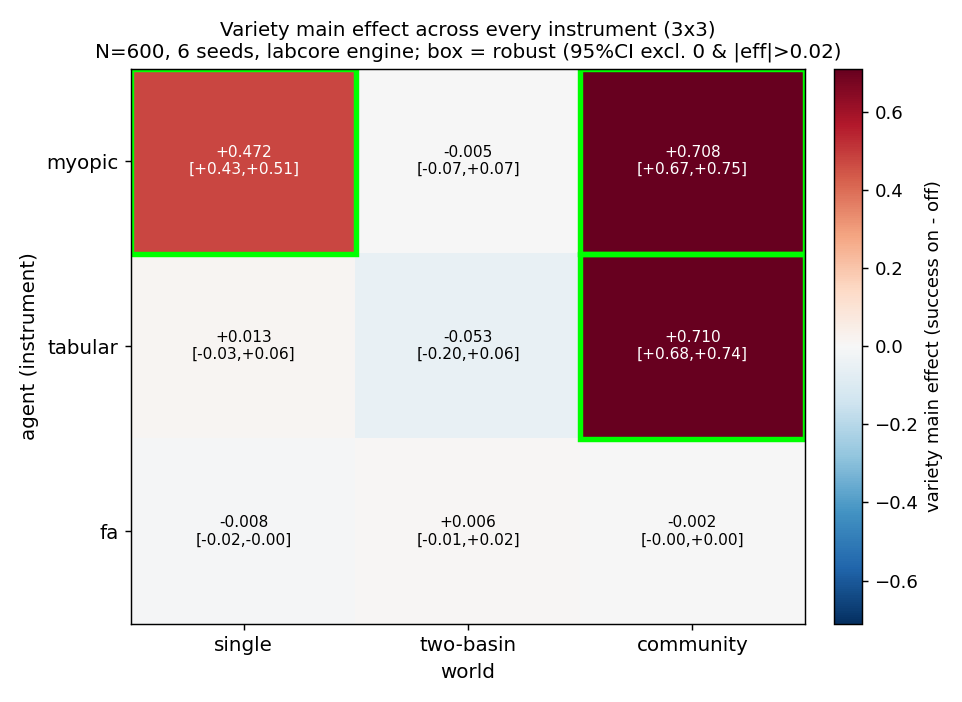

WORKGROUND · ATLAS
Atlas — Variety across every instrument
One slice of the robustness atlas: the variety mechanism's main effect re-tested on the Rust engine across the full 3×3 of agents (myopic / tabular / linear-FA) and worlds (single-basin / two-basin / found-community). This is the slice that adjudicates the open disagreement between Lab III and Lab IV about whether variety carries the stack.
labcore run (N=600, 6 seeds,
full 2⁴ factorial, seed-bootstrap 95% CI), written by the slice script
to atlas/variety.json. A cell is robust
iff the 95% CI excludes 0 and |effect| > 0.02. Honest
negatives are the whole point of running it; they are reported, not
smoothed.The contested claim
Lab III (tabular agent, single basin) found variety the dominant mechanism — main effect +0.197, far above vow (+0.012), forgive (+0.035), grace (+0.052); the lab's own summary says "variety carries it". Lab IV moved to a lossy linear function approximator on a found community basin and reported variety small (+0.024, just barely robust) while grace and vow took over — and went further: it ran the "a lossier feature map needs more variety" law as a prediction and the engine falsified it (variety did not rise monotonically as the map degraded k=4→onehot; rank-correlation ≈ −0.05).
So: is variety a load-bearing mechanism, or a tabular-only artifact? The atlas slice answers it by re-running variety as a clean main-effect contrast in every instrument at once.
Result grid (live numbers)
| agent | world | variety effect | 95% CI | jaccard | verdict |
|---|---|---|---|---|---|
| myopic | single | +0.472 | [+0.426, +0.509] | 0.429 | ROBUST + |
| myopic | two-basin | −0.005 | [−0.069, +0.074] | 0.042 | null |
| myopic | community | +0.708 | [+0.667, +0.755] | 0.394 | ROBUST + |
| tabular | single | +0.013 | [−0.033, +0.064] | 0.071 | null |
| tabular | two-basin | −0.053 | [−0.204, +0.058] | 0.084 | null |
| tabular | community | +0.710 | [+0.684, +0.743] | 0.404 | ROBUST + |
| fa | single | −0.008 | [−0.016, −0.000] | 0.500 | null (|eff|<0.02) |
| fa | two-basin | +0.006 | [−0.006, +0.019] | 0.042 | null |
| fa | community | −0.002 | [−0.003, +0.000] | 0.395 | null |
Three of nine instruments are robust, all positive: myopic×single, myopic×community, tabular×community. The other six are statistical nulls — including, flatly, the entire FA row.

Honest verdict — reconciling Lab III, Lab IV, and this slice
Lab III was right about its own cell, and wrong to generalise. Lab III's "variety carries the stack" was measured on exactly one instrument (tabular, single-ish basin) and read as a law of the corpus. The atlas shows variety's effect is instrument-specific, not universal. Notably, the tabular× single cell here is a clean null (+0.013, CI crosses 0). That is not a refutation of Lab III so much as a relocation: the variety win survives into the engine, but it lives in the found-community world (tabular×community +0.710, the single largest robust effect) and on the myopic instrument — not in the simple single basin that Lab III happened to use. "Variety carries it" does not generalise as stated; it generalises only conditionally, to harder/structured basins and shorter-horizon agents.
Lab IV was right that variety is not load-bearing for the FA instrument. The whole FA row here is null (−0.008, +0.006, −0.002 — all |effect| < 0.02, two of the three with CIs touching 0). Lab IV's "variety is small" was its honest read of a near-threshold +0.024 under linear function approximation; the atlas confirms and sharpens it: under FA, variety is not merely small, it is absent at N=600 across all three worlds. Lab IV's falsification of the "lossier map needs more variety" law is consistent with this — if variety has no main effect under FA at all, there is no effect for map-lossiness to modulate. The two results agree.
So the disagreement was never a contradiction; it was a hidden interaction. Lab III and Lab IV sampled different corners of a 3×3 and each universalised its corner. Read together with the atlas: variety is a real, large mechanism for value-table-style learners on structured (community) basins, a null for a linear function approximator, and a coin-flip in the contested two-basin world for everyone (no cell in that column is robust). The mechanism is genuine but conditional — exactly the failure mode Lab IV's "survive a change of instrument or be exposed" doctrine was built to catch, and it caught it.
One-line summary: variety is robust only on myopic×single, myopic×community, and tabular×community — so Lab III's "variety carries it" does not generalise; it survives only into structured/community basins and never into the FA instrument.
See also
- Lab V / the atlas — the engine and backbone this slice runs on, and the other mechanism slices.
- Lab III — the tabular run that said "variety carries the stack"; this slice is the cross-instrument retest of that claim.
- Lab IV — the FA run that called variety small and falsified the "lossier map needs more variety" law; the FA row here confirms it.